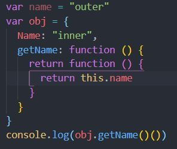

web前端工作经验总结
(1.) 出现时间: cookie 很早以前就有, webStorage 是 H5 标准里面增加的.
(2)跟随请求的状态:cookie 会跟着请求前后台的跑, webStorage 不会跟着跑
(3)存储大小:cookie 一般是 4K 左右, webStorage 一般是 5M 左右
(4)生命周期: cookie 一般是浏览器关闭就没有了，可以设置的, sessionStorage 是浏览器关闭就没有了, localStorage 一直存在（除非手动删除）
(5)设置角色:cookie 可以在浏览器端设置，可以在服务器端设置, webStorage 只能在浏览器端设置
声明周期：sessionStorage 是浏览器关闭就没有了，localStorage 一直存在（除非手动删除）
跨页面通讯能力：sessionStorage 一般不能跨页面通讯（除非出现跳转），localStorage 可以任意跨页面通讯（域名）
添加方法：window.sessionStorage.setItem('name', 'Jack')
添加方法：window.localStorage.setItem('name', 'Jack')
2、用js实现点击标签实现，弹出标签里的内容
点击我是第一个标签 点击我是第二个标签 点击我是第三个标签3、用js实现对象简单继承的例子
4、用正则表达式验证e-mail地址
/^\w[a-z]([a-z0-9]*[-_]?[a-z0-9]+)*@([a-z0-9]*[-_]?[a-z0-9]+)+[\.][a-z]{2,3}([\.][a-z]{2})$/i
5、用js把“早上好”转换成“早-上-号”
先splite（''）方法字符串转数组，在join('-')数组用‘-’拼接成字符串
6、请说明响应式设计（responsive design）和自适应设计（adaptive design）不同
自适应是为了解决如何在不同大小的设备上呈现同样的网页（网页的主题和内容不改变） 响应式的概念覆盖了自适应，而且涵盖的内容更多。 自适应暴露的一个问题，如果屏幕太小，即使网页能够根据屏幕大小进行适配， 但是会感觉在小屏幕上查看内容太过拥挤。响应式正是针对这个问题衍生出的概念。 它可以自动识别屏幕宽度、并做出相应调整的网页设计、布局和展示的内容可能会有所改变。
7、写出下面代码输出结果
1、console.log(1 + 2 + '3') // 33
2、class MyClass {} console.log(typeof MyClass) // function
3、console.log(typeof a) console.log(typeof b) var a = 3 let b = 3 // undefined, b is not defined
4、 啥也没输出
8、http请求中Method包括GET，POST，PUT，DELETE等，试比较说明其含义和使用场景。 友情链接1 友情链接2
PUT：PUT请求是向服务器端发送数据的，从而改变信息，该请求就像数据库的update操作一样， 用来修改数据的内容，但是不会增加数据的种类等，也就是说无论进行多少次PUT操作，资源不会增加。
DELETE：就是用来删除某一个资源的，该请求就像数据库的delete操作。
GET：GET操作是安全的。所谓安全是指不管进行多少次操作，资源的状态都不会改变，GET只是访问和查看资源。
POST：操作不是安全的，每次请求都会创建资源，当我们多次发出POST请求后，其结果是创建出了多个资源。 还有一点需要注意的就是，创建操作可以使用POST，也可以使用PUT，区别在于POST 是作用在一个集合资源之上的（/uri），而PUT操作是作用在一个具体资源之上的（/uri/xxx）， 再通俗点说，如果URL可以在客户端确定，那么就使用PUT，如果是在服务端确定， 那么就使用POST，比如说很多资源使用数据库自增主键作为标识信息，而创建的资源的标识信息到底是什么只能由服务端提供，这个时候就必须使用POST。
9、比较说明下列协议http、http2，https。 友情链接
1、HTTPS协议需要到CA申请证书，一般免费证书很少，需要交费。
2、HTTP协议运行在TCP之上，所有传输的内容都是明文，HTTPS运行在SSL/TLS之上，SSL/TLS运行在TCP之上，所有传输的内容都经过加密的。
3、HTTP和HTTPS使用的是完全不同的连接方式，用的端口也不一样，前者是80，后者是443。
4、HTTPS可以有效的防止运营商劫持，解决了防劫持的一个大问题。
5、通俗理解：HTTPS在HTTP的基础上加入了SSL协议，SSL依靠证书来验证服务器的身份，并为浏览器和服务器之间的通信加密。
6、HTTP协议（HyperText Transfer Protocol，超文本传输协议）是用于从WWW服务器传输超文本到本地浏览器的传输协议。 它可以使浏览器更加高效，使网络传输减少。它不仅保证计算机正确快速地传输超文本文档， 还确定传输文档中的哪一部分，以及哪部分内容首先显示(如文本先于图形)等。 HTTP协议是一个无状态的协议，同一个客户端的这次请求和上次请求是没有对应关系。
7、SPDY 2012年google如一声惊雷提出了SPDY的方案，大家才开始从正面看待和解决老版本HTTP协议本身的问题， SPDY可以说是综合了HTTPS和HTTP两者有点于一体的传输协议，主要解决：
7-1、降低延迟，针对HTTP高延迟的问题，SPDY优雅的采取了多路复用（multiplexing）。多路复用通过多个请求stream共享一个tcp连接的方式，解决了HOL blocking的问题，降低了延迟同时提高了带宽的利用率。
7-2、请求优先级（request prioritization）。多路复用带来一个新的问题是，在连接共享的基础之上有可能会导致关键请求被阻塞。 SPDY允许给每个request设置优先级，这样重要的请求就会优先得到响应。比如浏览器加载首页，首页的html内容应该优先展示， 之后才是各种静态资源文件，脚本文件等加载，这样可以保证用户能第一时间看到网页内容。
7-3、header压缩。前面提到HTTP1.x的header很多时候都是重复多余的。选择合适的压缩算法可以减小包的大小和数量。
7-4、基于HTTPS的加密协议传输，大大提高了传输数据的可靠性。
7-5、服务端推送（server push），采用了SPDY的网页，例如我的网页有一个sytle.css的请求， 在客户端收到sytle.css数据的同时，服务端会将sytle.js的文件推送给客户端， 当客户端再次尝试获取sytle.js时就可以直接从缓存中获取到，不用再发请求了。
8、HTTP2.0可以说是SPDY的升级版（其实原本也是基于SPDY设计的）， 但是，HTTP2.0 跟 SPDY 仍有不同的地方，主要是以下两点：
8-1、HTTP2.0 支持明文 HTTP 传输，而 SPDY 强制使用 HTTPS。
8-2、HTTP2.0 消息头的压缩算法采用 HPACK，而非 SPDY 采用的 DEFLATE。
10、简述web前端cookie机制，并结合该机制说明会话保持原理。 具体cookie和session的api看链接
cookie是一种在客户端记录用户信息的技术，因为http协议是无状态的（同一个客户端的这次请求和上次请求是没有对应关系）， 为了解决这个问题而产生了cookie。记录用户名等一些应用。cookie是由服务器端创建发送回浏览器端的， 并且每次请求服务器都会将cookie带过去，以便服务器知道该用户是哪一个。 其cookie中是使用键值对来存储信息的，并且一个cookie只能存储一个键值对。 所以在获取cookie时，是会获取到所有的cookie，然后从其中遍历。 注意：一旦cookie创建好了，就不能在往其中增加别的键值对，但是可以修改其中的内容。 注意：cookie不能发送中文，如果要发送中文，就需要进行特别处理。
工作流程：
9-1. servlet创建cookie，保存少量数据，发送浏览器。
9-2. 浏览器获得服务器发送的cookie数据，将自动的保存到浏览器端。
9-3. 下次访问时，浏览器将自动携带cookie数据发送给服务器。
11、css选择器有哪些？优先级如何排序？！important的用法是什么？链接 链接2
1、标签选择器、类选择器、ID选择器、后代选择器、子代选择器、并集选择器、交集选择器、 属性选择器、伪类选择器（链接伪类选择器、结构伪类选择器、 目标伪类选择器【:target {}一般情况下,目标伪类选择器常与 锚链接配合使用.】）
2、CSS优先级是指CSS样式在浏览器中被解析的先后顺序
标签选择器 < 类选择器/属性选择器/伪类选择器 < id选择器 < 内联样式（style="" ）
3、CSS优先级法则：比较样式的优先级是，只需统计不同选择器的个数，然后与对应的权值相乘即可。根据结果便可得出优先级。
12-3-1结果较大的优先级较高；
12-3.2结果相同，则后定义的优先级较高
12-3-3创作者的优先级高于浏览者，网页编写者设置的CSS样式的优先权高于浏览器所设置的样式。
12-3-4继承的CSS样式优先级低于后来指定的CSS样式
12-3-5若样式值中含有!important，则该值优先级最高
4、!important 是CSS1就定义的语法，作用是提高指定样式的应用优先权。 声明了!important的样式，具有最高的优先级，相当于写在最下面（最后定义）
12、列举5个以上html5新标签并描述其用法 链接1 链接2
<audio>定义声音，比如音乐或其他音频流。
<nav> 定义导航链接。
<header> 定义 section 或 document 的页眉
<video> 定义视频，比如电影片段或其他视频流
<time> 定义日期或时间，或者两者
<mark> 主要的功能就是在页面中高亮显示那些需要在视觉上向用户突出其重要性的文字。 个比较典型的应用就是在搜索结果中向用户高亮显示搜索关键词
13、解释一下你对盒模型的理解，以及如何在css中告诉浏览器使用不同的盒模型来渲染你的布局。